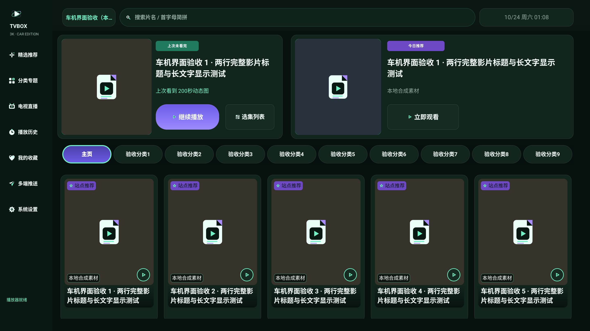
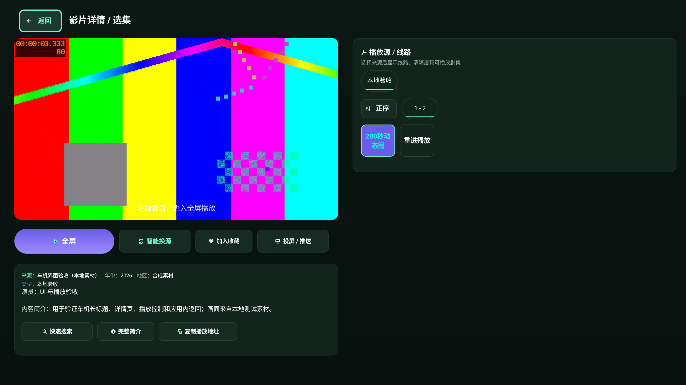
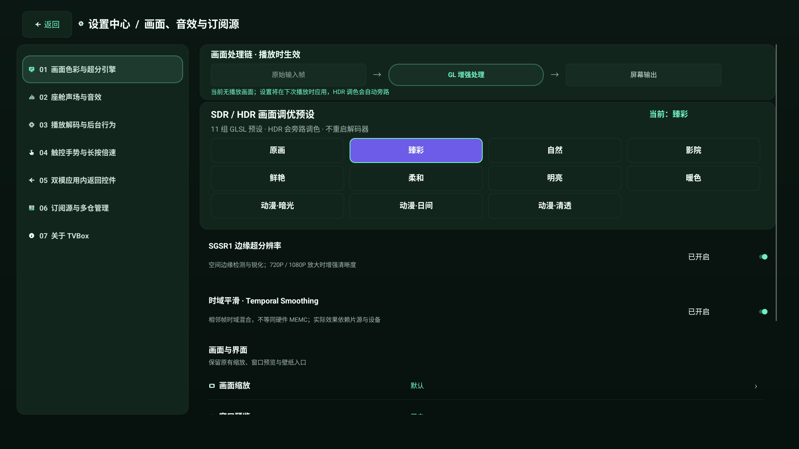
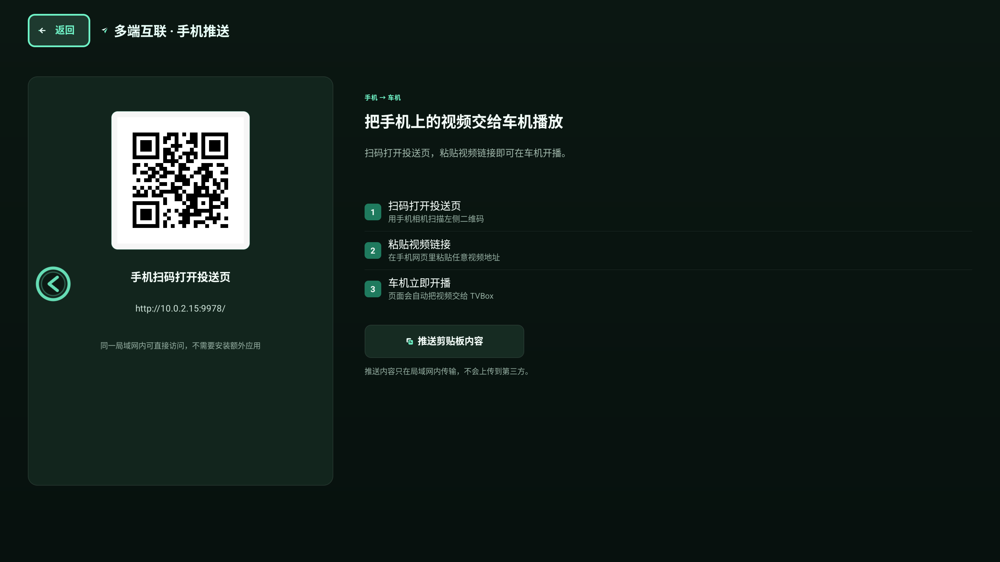
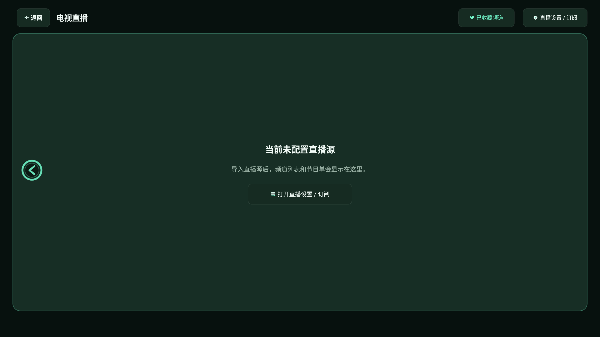

CAR-17.3-3K R5 · 新构建对 R4 报告的逐条甄别
结论
R4 报告（被测 2738fdef）的 24 条回归项与 6 条新问题中，凡属 UI/布局/交互的条目在当前构建上均复核通过；本轮没有需要改产品代码的 UI 缺陷，产品代码零改动，仅加固了原生测试框架。直播源注入相关的 11 条自动化断言因沙箱无法配置直播源而失败，直播空态 UI 本身正常。
回归结果（同一 SHA）
| 套件 | 结果 | 说明 |
|---|---|---|
| pages | 75 / 6 | 6 条全部为直播源注入 |
| ux3k | 93 / 5 | 5 条全部为直播源注入 |
| playback | 101 / 0 | EXO + IJK 全屏、后台、恢复 |
| gestures | 7 / 0 | 边缘返回、亮度/音量、全屏边缘条 |
| states | 5 / 0 | 空 / 加载 / 错误 / 离线 |
R4 逐条甄别
| 编号 | 判定 | 依据 |
|---|---|---|
| X01 信息卡溢出 | 已复核通过 | 386px 卡片 = 326 子项 + 60 padding，简介三行完整 |
| X02 预览提示叠字 | 已复核通过 | 提示固定在预览底部，与加载层分离 |
| X03 剧集格行数不一 | 已复核通过 | 集号单行、格子等高 |
| X04 右面板固定 1400px | 已复核通过 | wrap_content + minHeight 560，两集约 400px |
| X05 返回边距 / 占位徽标 | 已复核通过 | 返回 80px，右上徽标已删 |
| X06 顶栏右边界 | 已复核通过 | 时钟收进 2801 安全线 |
| X07 播放器就绪越底边 | 已复核通过 | 状态文本落在 1496 以上 |
| X08 搜索按钮图标压字 | 已复核通过 | 图标在左、文字在右 |
| X09 热词末格截断 | 已复核通过 | 15 词 / 5 列 3 行 |
| X10 六页左侧竖条 | 已复核通过 | 六页截图均无竖条 |
| X11 清空仅图标 | 已复核通过 | 图标 + 文字按钮 |
| X12 直播空态左卡与黑边 | 已复核通过 | 空态整页铺满 |
| X13 设置行距离与分隔 | 已复核通过 | 104 行高 + 分隔线 + 薄荷值 |
| X14 设置末行裁切 | 已复核通过 | 底部安全内边距 + 滚动尾部 |
| X15 处理链空框 | 已复核通过 | 三节点处理链 |
| X16 输入法遮挡弹窗 | 代码保持修复；本批未重拍 | ApiDialog 适配未改动 |
| X17 二维码与输入框 | 代码保持修复；本批未重拍 | car_input_surface / 圆角 QR |
| X18 源列表无关闭 | 代码保持修复；本批未重拍 | SelectDialog 底部关闭 |
| N01 分类胶囊点击无响应 | 已复核通过 | pages: gallery category is selected |
| N02 搜索空态残留标题 | 已复核通过 | 无「多源搜索结果」残留 |
| N03 历史标题压封面 | 已复核通过 | 标题区渐变遮罩 |
| N04 78 站点弹窗 | 代码保持修复；本批未重拍 | 小号全选 / 滚动 / 底部关闭 |
| N05 推送页层级 | 已复核通过 | 左右分栏 + 编号步骤 |
| N06 胶囊行右端残片 | 已复核通过 | 右端无碎片 |
关键截图






本轮实际改动
startActivitySync在 Android 15 漏 launch 回调 →launchSync用 ActivityLifecycleCallbacks 等真实 resume。waitForIdleSync在该实例不返回 →pause()改为 sleep，控件读写仍走runOnMainSync。- 直播源 URL 在启动阶段预置
LIVE_API_URL。
边界
- 直播源注入未生效：11 条直播断言失败；直播空态 UI 正常，不是 UI 回归。
- 本轮未重拍 API 弹窗、源列表弹窗截图（X16/X17/X18/N04）。
- 背景彩条为本地验收视频；状态壳由真实 Android 状态组件生成。